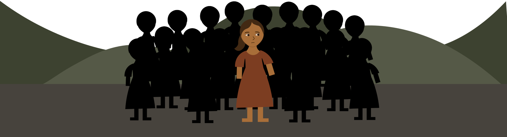
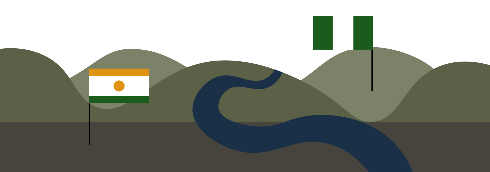

Goal 6 Ensure availability and sustainable management of water and sanitation for all

The Clock Is Ticking...
This is the story about

Every morning, 12-year-old Maya wakes before the sun.
Not to get ready for school—but to fetch water.

She walks nearly 3 kilometers down a dusty path in her rural village.
The river she collects from isn't clean, but it's the only option.
Boiling the water helps a little—when there's enough fuel,
but some days the water makes her sick, and she can't go to school..
Maya is one of without access to safe drinking water.
Her family lives in a region hit by frequent droughts.
Part of the 1.4 billion affected by droughts between 2002 and 2021.
On the news, Maya sees images of places with shiny taps, but even those places are changing.
In 2022, half the world faced severe water scarcity.

One in four people lived with extremely high water stress.
Maya's river flows through two countries. But neither government talks to the other about how to protect it.
Less than with shared waters have strong cooperation.
There is progress:
Aid for water projects rose 10% in 2022, after five years of decline. Wastewater treatment is improving, and some regions are managing water more efficiently.